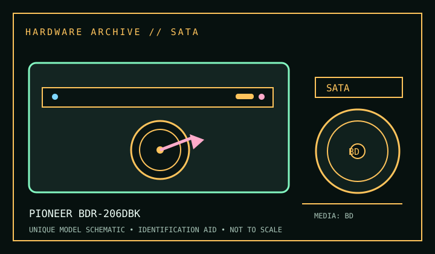

[ BLU-RAY DRIVES // IDENTIFIED MODEL ]
Pioneer BDR-206DBK
BD-R/BD-RE, DVD±R/RW, CD-R/RW write/read. Ratings below are model-specific; suffix, firmware and media can change compatibility.

IDENTIFICATION: Compare full model, suffix, OEM part number and firmware with the cited manual before installing, servicing, or using the drive for preservation reads.
Documented specifications
| Catalog subcategory | Blu-ray drives |
|---|---|
| Exact model | Pioneer BDR-206DBK |
| Read/write formats | BD-R/BD-RE, DVD±R/RW, CD-R/RW write/read |
| Rated speeds | BD-R up to 12×; BD-RE up to 2×; DVD±R up to 16×. Maximums are media- and mode-dependent; sustained rate is not guaranteed. |
| Interface / mechanics | Internal 5.25-inch SATA. Consult the named service/product manual for mounting drawings; dimensions are not repeated where the cited model literature does not establish them. |
| Host / software compatibility | Blu-ray-capable authoring/playback software required; protected video requires supported host configuration. |
| Model distinctions | 206DBK is distinct from slim 206MBK and 206D suffixes; verify label and firmware. |
Use, compatibility & preservation
- Blu-ray-capable authoring/playback software required; protected video requires supported host configuration.
- 206DBK is distinct from slim 206MBK and 206D suffixes; verify label and firmware.
- For imaging, record exact drive/firmware, interface controller, host OS, application version, disc format and any read or verification errors; retain checksummed image copies and logs.
- Handle discs by edge or center hole; keep them in cases in a cool, dry location away from direct sunlight. Avoid adhesive labels, abrasives and undocumented polishing/solvents.
Read support is not write support. Verify the full unit label against the manual and measure the actual bay/caddy when a fit drawing is not available.
Sources
- Pioneer Pioneer BDR-206DBK product manual / specificationsManufacturer support/product documentation locator for the exact named model. Match manual revision and product suffix to the label before applying a specification.
- Blu-ray Disc Association — Blu-ray, BDXL and Ultra HD Blu-ray specificationsApplicable format/standards reference; it describes the disc format, not a guarantee that every drive revision implements it.
- Library of Congress — CD-R and DVD-R/RW longevityPreservation guidance for recordable optical media, not drive product specifications.